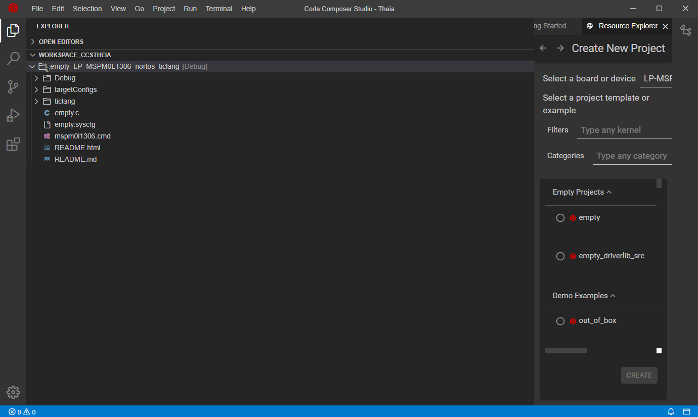

适用于 CCS Theia 的 MSPM0 SDK 快速入门指南¶
1. 简介¶
本指南旨在帮助用户进行初始设置并演示如何使用 CCS Theia 运行他们的第一个 MSPM0应用程序。
本指南不用于解释 CCS Theia 的功能。 请参阅 CCS Theia 中的帮助菜单提供的文档，或者参考MSPM0 SDK 文档中的CCS Theia IDE Guide for MSPM0 MCUs。
2. 前期准备¶
用户应该已经下载并安装了以下内容：
3. 在 CCS Theia 上启动 MSPM0项目¶
打开 CCS Theia，此时将显示 Getting Started 页面，也可以通过下面方式打开 选择 Help → Getting Started。
请注意，CCS Theia 将自动检测 MSPM0 LaunchPad (如果已连接)。

2 .单击 Create a new project with Code Composer Studio IDE 打开项目向导。
在“项目向导”中，选择：
器件或 Launchpad
打开项目，请注意，提供了简要说明，可以使用搜索过滤器
项目名称
编译器、请注意 CCS Theia 支持 TI Arm Clang 和 Arm GCC
RTOS 或 No-RTOS (如果可用)

单击 Create。
如果尚未安装 MSPM0 SDK，CCS Theia 将请求安装该 SDK，也可能要求安装其他组件，比如编译器。

安装 SDK 后关闭窗口。

项目将导入到工作区中。
 (可选)打开 SysConfig。
MSPM0 SDK 中的一些样例程序支持 SysConfig。SysConfig 提供直观易用的图形界面用于配置MCU的管脚、外设、时钟树、子系统和其他组件。 SysConfig 可帮助您直观地避免配置冲突，以便您有更多时间开发差异化的应用程序。
只需双击工程中的
.syscfg文件、即可打开 SysConfig 查看器并开始浏览。
有关基于MSPM0使用 SysConfig的更多信息，请访问Using SysConfig with MSPM0指南。
右键单击该项目，然后单击 Build Project(s)。

按 F5 或单击 Debug 图标，然后单击 Start debugging 图标。

4. 使用 TI Resource Explorer¶
TI Resource Explorer (TI-Rex)可帮助您查找适用于所选平台的所有最新示例、库、演示应用、数据表等。
此工具可从 https://dev.ti.com/tirex 获取，但它也集成到 CCS Theia 中，从而提供更集成的用户体验。

5. 已知问题和常见问题解答(FAQ)¶
请参阅 SDK 内部的 Known Issues and FAQ。